传输层
传输层所在的功能和位置
传输层是网络网络分层模型中较为重要的一层，提供了端到端的可靠、高效、低开销的数据传输服务，而且同当前的物理设备和网络无关。
传输层提供了进程到进程级别的通信传输服务：
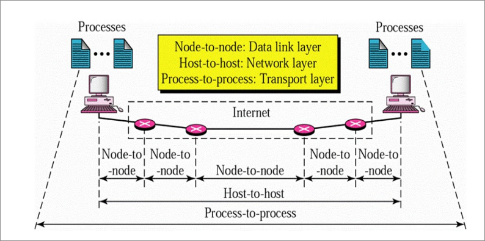
传输层提供的服务
- 屏蔽了通信网络的复杂性并向上层提供了同一的通信接口
- 通过单一的网络接口提供了多个服务访问点
Service Access Points - 提供了面向连接和无连接两种服务
伯克利的套接字是目前在互联网上被广泛应用的传输层API：
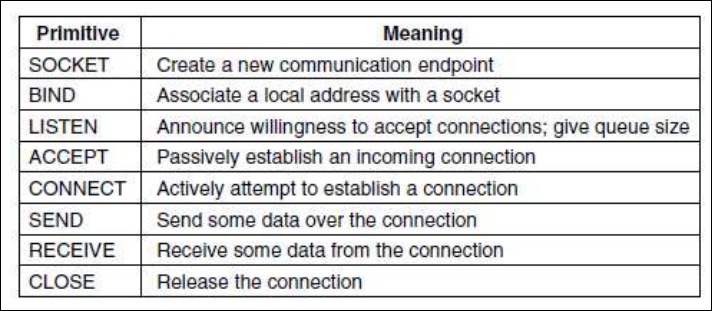
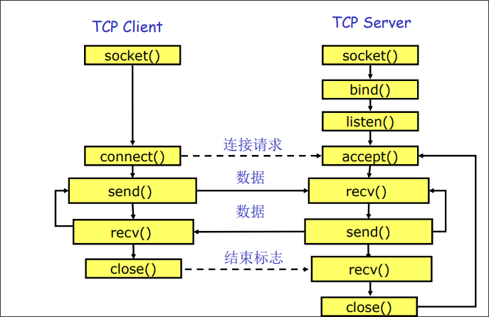
传输协议的重点
传输层协议和数据链路层协议的比较
都需要处理差错控制、序列、流量控制等等问题。
但是数据链路层是节点到节点的传输，传输层是进程到进程。
两者所在的环境是也不太相同：
- 不同的地址
- 连接建立的过程不同
- 不同子网的容纳量不同
- 缓冲的分配方式不同
地址编码方式：端口号
决定不同的进程应该如何发送和收到不同的信息，也就是应用层进程的服务提供点。
不同的端口号还提供了复用的功能：
- 对于发送方：通过端口号区分从不同进程发送的数据包，实现对于传输层的复用
- 对于接收方：通过端口号区分从不同进程接受的数据包，实现对于传输层的复用
连接建立过程中的问题
基础的连接建立过程是通过两次握手：一方发送一个连接请求然后等待另一方发送一个接受连接的回复。
但是存在问题：网络传输过程中可能存在延迟，导致重复的连接：
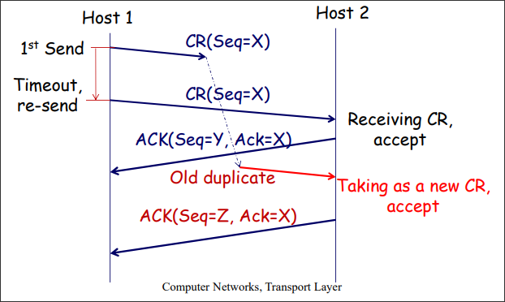
通过三次握手就可以结果建立连接重复的问题：
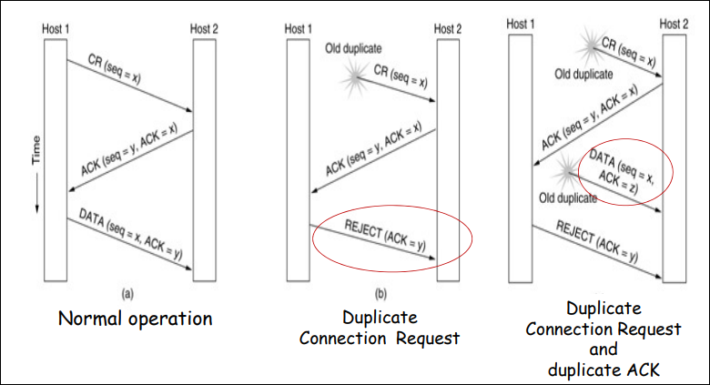
在释放连接的过程中也存在着类似的问题：也可以通过类似的三次握手消息来解决。

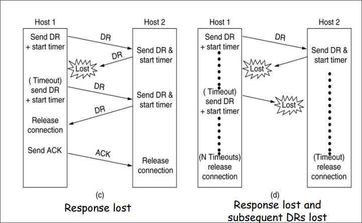
差错控制
差错控制使用了自动请求重传的机制，提供了进程到进程的差错控制。
在数据链路层和传输层都有差错控制，需要注意这两者的不同：
- 功能上的不同
- 尺度上的不同
拥塞控制
如果发送了过多的包到一个网络中，就会发生拥塞的现象，会出现时延增加和丢包的情况。
需要注意对比拥塞控制和流量控制之间的区别：

如何在多个发送方之间合理的分配带宽？最大最小公平性原则。
使得资源分配向量的最小分量的值最大，防止任何网络流被“饿死”，同时一定程度上尽可能增加每个流的速率。判断原则：在满足最小需求的前提下，各个流尽量均分带宽，如果增加任何一个参与者的带宽，将导致其他具有相同或者更少带宽的参与者的带宽下降，此时即满足了最大最下公平性。
在Internet中的拥塞控制步骤：
-
发现拥塞：路由器更具队列长度或者线路利用率判断
-
将拥塞情况通知源主机：
显示拥塞通知：
TCPwithECN隐式拥塞通知：源主机按照丢包的情况自行判断（更加常用）
-
源主机采取措施：
在没有拥塞的时候，增加发送速率
在存在拥塞的时候，降低发送速率
为了达到效率和公平的平衡点，使用加法增乘法减的控制策略：

Internet中的传输层
UDP用户数据包协议
无连接的，不可靠的协议，类似于IP的“尽力”协议。
- 没有确认帧
- 没有丢包或者乱序的侦测机制
- 没有重传机制
- 没有流量控制机制
相对于IP唯一多提供的功能就是基于端口号的复用功能。
UDP的包格式如图所示：

在UDP计算的校验和时，会带上IP部分的包头一同计算。发送方为了计算校验和而创建的IP包头因为不会被实际发送出去，而且被称为伪包头。
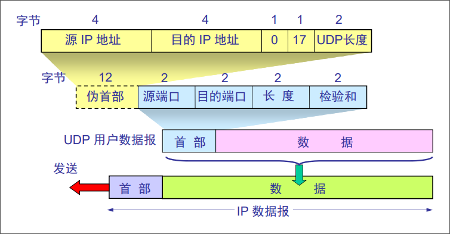
TCP传输控制协议
TCP的特点
-
面向连接的传输
-
可靠的传输（
ARQ）使用确认帧
使用校验和发现错误
重传传输错误的详细
使用序列号侦测丢失或者乱序的包
流量控制
-
基于字节的传输，不能保持消息的边界
-
有拥塞控制
下面这种图说明了“不保留消息边界的含义”。
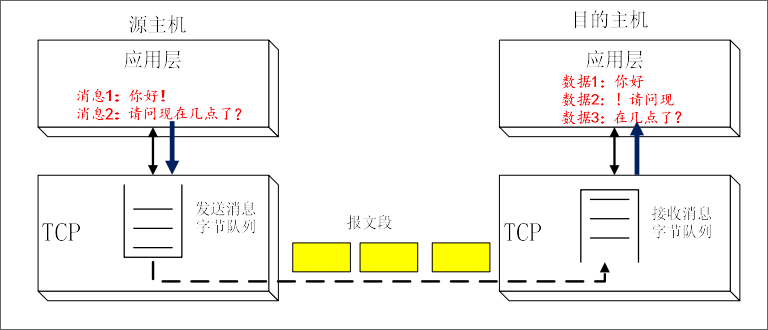
TCP报文段格式
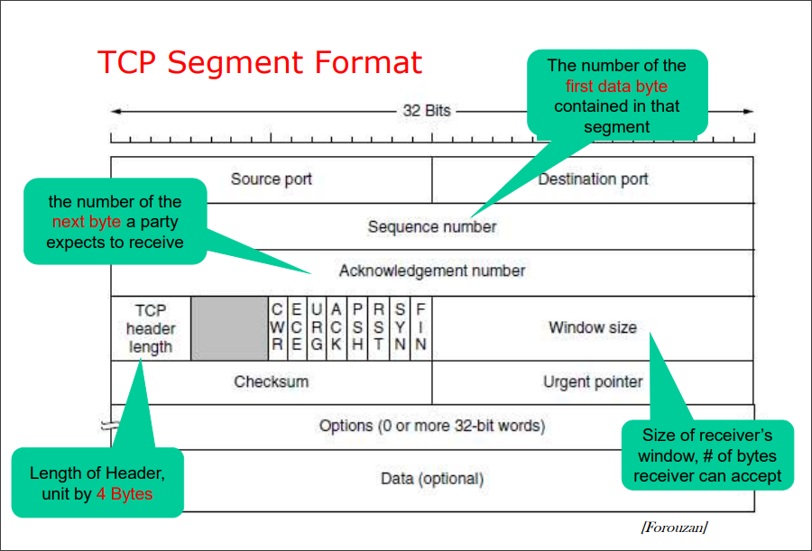
其中的部分控制字段含义如下：
URG指示紧急数据指针urgent pointer有效，该指针指向的数据需要提前处理ACK表示确认字段有效PSH指示数据需要尽快提交给应用层，但是优先级低于URGRST表示连接需要重置SYN同步报文段序号FIN表示连接即将结束
最前面的两位ECE和CWR是用于显示拥塞控制的，将同IP包头中的ECN字段协同工作。其中ECN字段有路由器设置，ECE由接收方设置，CWR由发送方设置。
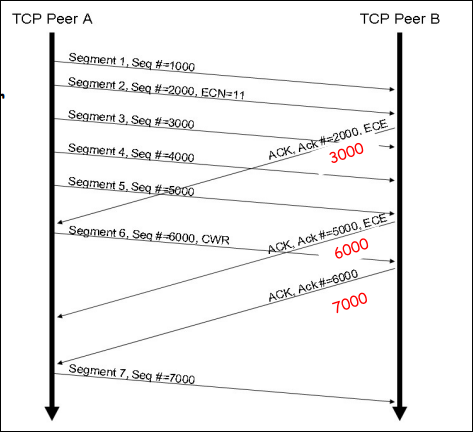
TCP协议中还有支持一些扩展选项：
-
MSS最大报文段大小允许主机指定
TCP的最大大小 -
Window Scale允许指定扩大滑动窗口大小的倍数，在一些信道延迟很大的情况下很有用
-
Timestamp可以记载时间戳，计算时延
-
Selective ACK允许接收方通知发送方一系列收到的序号。

连接管理
TCP首先需要三次握手同服务器建立连接。在这个过程中，客户端和服务端协商好开始序列号，同时解决重复连接的问题。
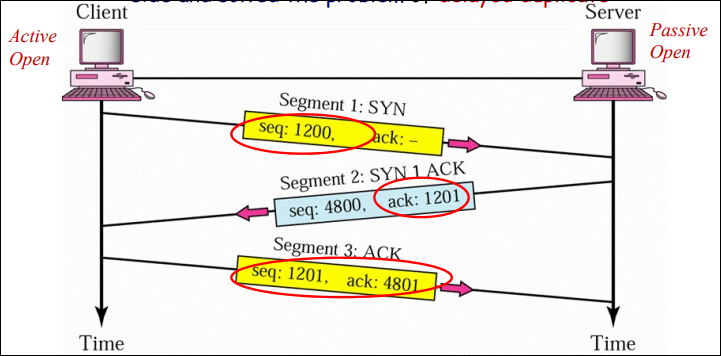
在编号的方面需要注意：SYN和ACK报文段虽然不能携带数据，但是这两个哥们都需要算上一个序号。
下面的图表示了在建立连接之后的数据传输过程：

数据传输完成之后的关闭连接过程，也是三次握手：

和建立连接握手的过程中一样，虽然FIN和ACK报文段不能携带数据，但是仍然要占据一个序号。
但是在实际使用过程中，当一边的主机想要关闭链接的时候，另一边的主机不一定想要关闭连接，于是一种被称为半连接关闭的方式被广泛使用。在一边宣布关闭连接之后，另一边还可以继续传输数据，之后在宣布关闭连接。

流量控制和窗口大小管理

在TCP协议中，主机之间可以使用协议中的WIN字段通知对方自己缓冲区中剩余的大小。
这里需要对比TCP同数据链路层之间的区别：
- 在
TCP中窗口大小按照字节为单位，但是在数据链路层中按照帧为大小 - 在
TCP中窗口大小是可变的，但是在数据链路层中是固定的
当收到对方的WIN字段为0时，主机的行为是：
- 一般情况下不会再发送数据
- 但是一些标记为紧急的分段仍然可能发送
- 如果遇到死锁（更新窗口大小的帧在传输过程中丢失了），发送方可能会发送一个1字节大小的分段去确认缓存的大小是否仍然为0
总的来说，TCP中的滑动窗口的大小具有如下的特点：
-
发送方不用发送整个窗口大小的数据
-
动态的窗口大小：
发送方的大小可以由接收端的
WIN字段来控制。但是如果在网络中遇到拥塞，实际可以用到的窗口大小可能会更小。
-
接收方可能在任何时候发送确认帧
在发送过程中还会遇到一系列有趣的问题：
-
Nagle问题这个问题在初期的
TELNET协议中遇到，这个协议以一次只发送一个字节的数据而闻名。但是为了发送这个字节的数据，可能会最多发送162字节的数据，这就造成了巨大的浪费。这个问题的解决办法就是尽量发送尽可能大的分段，提高利用率，具体的阈值为：
- 已经接收到上一个分段的确认帧
- 缓存的数据已经填满了半个窗口或者最大分段
MSS的一半
-
Silly Window Syndrome现象大致就是接受方在窗口还在非常小的时候不要就通知发送方，较小的窗口大小会导致效率下降。
处理方式就是等待一段时间直到窗口较大的时候再发送。
错误控制
TCP的错误控制包括侦测损坏的分段、丢失的分段、乱序的分段以及重复的分段。
TCP仍然使用自动选择重传ARQ机制来进行错误控制。
在正常情况下，没有遇到任何的错误。接收方会等待一段时间500ms，来判断是否有更多的分段在传输过程中，以提供ACK的效率。
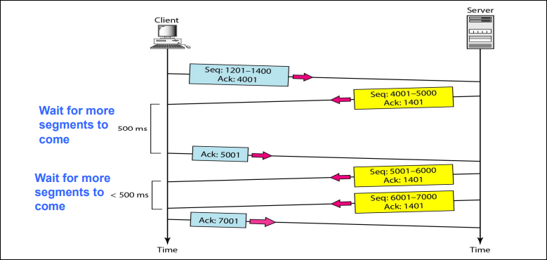
如果在传输过程中，遇到丢失的帧，使用选择重传处理。

需要注意的是，在传输过程中，ACK帧不重传。
在TCP中还存在一种特殊的机制称为快速重传，在收到三个重复的确认帧之后，发送方立刻发送这个丢失的帧。
定时器管理
在TCP中一共存在四个定时器：
-
重传定时器
-
持久定时器
Persistence：当接收方发送0窗口大小的时候使用主要就是防止上文提到过的死锁问题，防止新的窗口通知帧在传输过程中丢失。
-
保活定时器：当另一方长时间空闲的时候使用
当另一方长时间沉默的时候问一下对面还活着吗。
-
等待时间定时器
Time-waited：在释放连接时等待避免“两军问题”。
在定时器管理中的主要问题就是重传定时器的时长怎么确定？如果太长会导致较低的吞吐量，太短又会导致大量的重复帧。

在TCP中采用下列公式确定重传定时器的时长：
其中的Sample是收到确认帧的时间减去发送帧的时间。
拥塞控制
在没有端到端的带宽保证的情况下，拥塞控制是十分必要的。
TCP中的发送方通过隐式的拥塞通知得知发生了拥塞，同时按照加法增乘法减AIMD的算法控制其的发送速度。其中，TCP使用被称为慢启动的技术去快速得知一个合理的拥塞窗口待行区啊，使用快速重传避免超时。
拥塞窗口是一个由发送方控制的变量，表示在网络中最多能发送的数据量。

重传定时器超时就标志着发生拥塞
收到确认帧就表示可发送数据
为了简化描述，下面使用可发送的分段个数表示拥塞窗口。
慢启动技术：初始的发送速率设置的很小（1），每收到一个确认帧将窗口扩大1，如果定时器超时，再次窗口设置为1。
虽然称为慢启动策略，但是启动过程中窗口的大小是指数级增长的。

当当前窗口的大小达到发生重传的窗口大小的一半时，可以脱离慢启动的过程而进入AIMD。
在引入快速重传（三次重复的确认帧就认为是丢失）之后，拥塞控制也引入快速恢复。当遇到快速重传之后，发送的速度像慢启动一样直接回到1，而至减半，同时也继续AIMD控制而不是开始慢启动。
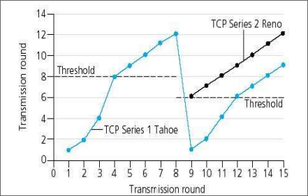
图中的蓝线是原始版本，黑线是引入快速重传和快速恢复之后。